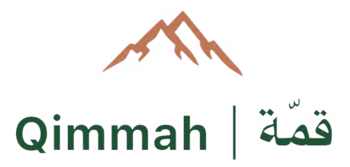
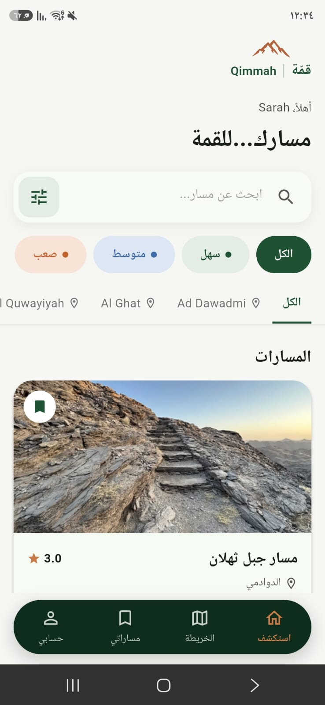
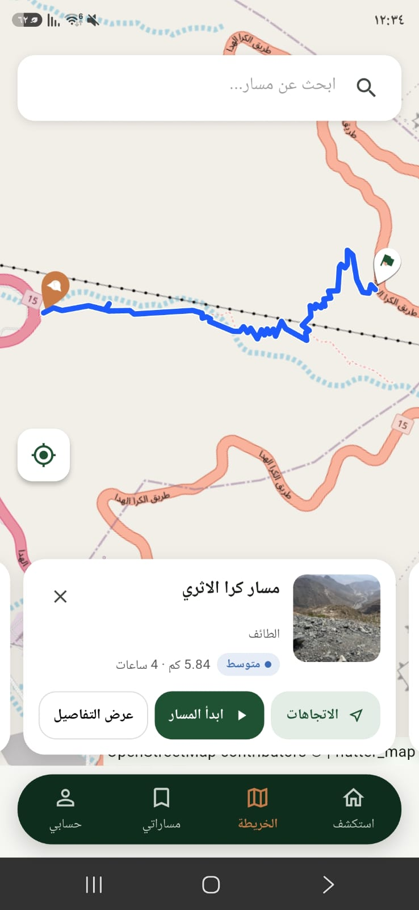
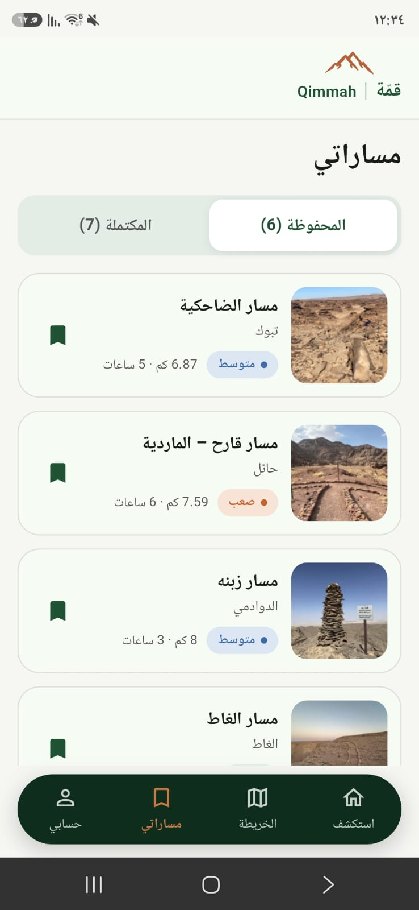
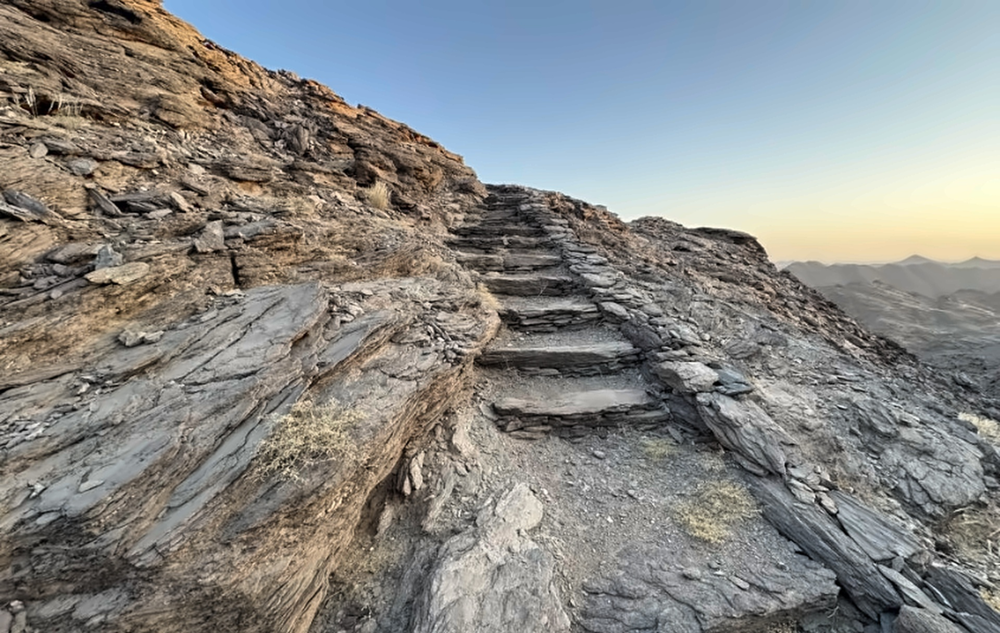
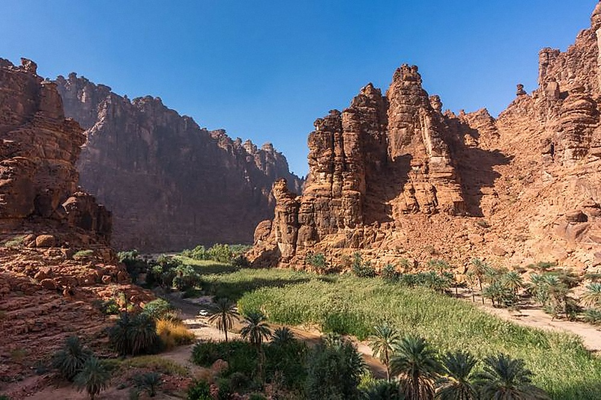

اكتشف قمم السعودية، واختر مسارك وابدأ رحلتك.
ليش قمة؟
كل اللي تحتاجه عشان تختار مسارك بثقة، من أول نظرة لين توصل القمة.

سهل، متوسط، وصعب. تدوّر بالبحث أو تفلتر حسب الصعوبة والمدينة، وتشوف المسافة والمدة قبل ما تطلع.

شوف المسار على الخريطة قبل ما تطلع: نقطة البداية، المسافة والمدة، وتبدأ المسار أو تفتح اتجاهاته.

احفظ المسارات اللي تعجبك، وتابع اللي اكتمل منها وكم مشيت، وكل شي في مكان واحد.
القصة


شهدنا في السنوات الأخيرة اهتمامًا متزايدًا برياضة المشي في الجبال داخل المملكة، ومع ذلك لم نجد منصة تجمع المسارات في مكان واحد وتقدّم تفاصيلها بوضوح. من هذه الفجوة وُلدت فكرة «قمة»: تطبيق يساعدك على اختيار المسار المناسب لك، ويعرّفك بتفاصيله من مستوى الصعوبة إلى المسافة والمدة، قبل أن تبدأ رحلتك.
قمة مشروع تخرج من Holberton School
مديرة المشروع
تخطط المهام والمواعيد، تدير اجتماعات الفريق وتتابع التقدم والمخاطر، وتتواصل مع الاتحاد. تربط أجزاء التطبيق ببعض وتقود الاختبار.
مطورة الخلفية – المسارات والبيانات
تصمم قاعدة البيانات وتبنيها، وتتولى كل ما يخص المسارات: إضافة البيانات الرسمية، مراجعة كل مسار قبل نشره، وفلترة المسارات حسب المنطقة والصعوبة. وتحدّث ملف README ووثائق المراحل.
مصممة UI/UX ومطورة الواجهة
تصمم الشاشات ورحلة المستخدم في Figma، وتبني الهوية البصرية، وتقود شاشات التطبيق والخريطة وصفحات المسارات.